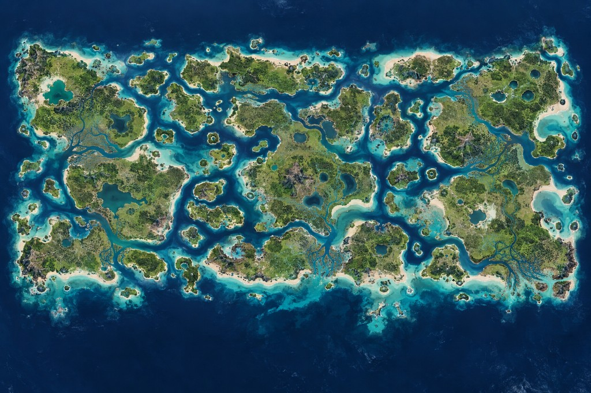

A wide scatter of tropical islands. One of them looked like a cracker when they mapped it. The captain was Mack.

The sailing master held the wet chart to the lantern and said the big island had holes like a biscuit. Captain Mack, who had not laughed in a week, laughed then. The crew called it the cracker. They called the skipper Mack. By the time the ink dried the two words had stuck together: Crackamack. Mack's Port is still the name of the harbor on that holed island. The rest of the chain kept smaller names — crumbs, they said, that fell off the chart.
This is island warfare. Ports and boats matter more than a single inland battery. Do not assume two green blobs are one country — the channels between them are deep. Take Mack's Port if you want a fat island with holes you can hide a navy in. Ignore the crumbs and someone will spawn behind you.
See also: K Island · Port · play Marauder's Sea free